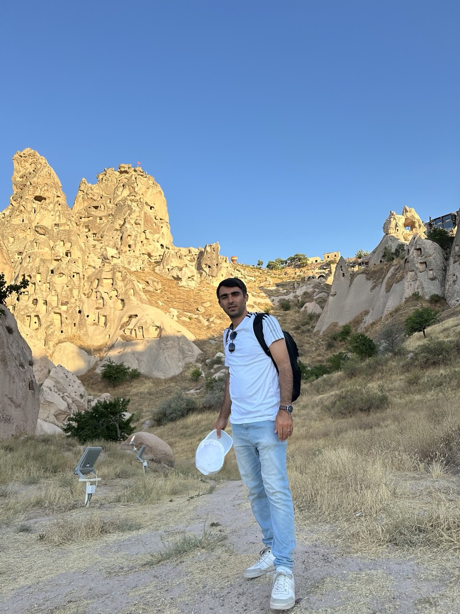

Shahrooz Pouryousef
Postdoctoral Researcher · Chalmers University of Technology
Gothenburg, Sweden
I am a Postdoctoral Researcher at Chalmers University of Technology, Gothenburg, Sweden, supported by the Wallenberg AI, Autonomous Systems and Software Program (WASP), and I am on the 2026-2027 academic job market. My research lies at the intersection of AI and networked systems, with current focus on LLM agents, AI for networking, and adversarial and privacy attacks on LLM serving systems.
Research interests: AI for networked systems, LLM agents, network security, quantum networking, and robust quantum machine learning.
I received my Ph.D. in Computer Science from the University of Massachusetts Amherst, where I am honored to have been advised by Professor Don Towsley. My dissertation studied resource allocation and scheduling under probabilistic constraints in networked and distributed systems. My work has appeared at IEEE S&P, USENIX NSDI, IEEE INFOCOM, IEEE Network, and PAM, and was recognized with a Best Paper Award at IEEE QCE 2023.
News
- 2026 "Critical Evaluation of Quantum Machine Learning for Adversarial Robustness" accepted at IEEE Symposium on Security and Privacy (S&P / Oakland).
- 2026 Joined Chalmers University of Technology as a WASP Postdoctoral Researcher, Gothenburg, Sweden.
- 2025 New preprint: "Do LLMs Understand Collaborative Signals? Diagnosis and Repair." arXiv
- 2025 Ph.D. awarded, University of Massachusetts Amherst. Dissertation: Resource Allocation in Networked/Distributed Systems. Advisor: Prof. Don Towsley.
- 2023 Best Paper Award at IEEE Quantum Week (QCE 2023) for work on scalability of quantum repeater networks.
- 2023 "A Quantum Overlay Network for Efficient Entanglement Distribution" accepted at IEEE INFOCOM.
- 2020 "Towards Logically Centralized Interdomain Routing" accepted at USENIX NSDI.
Selected Publications
A Quantum Overlay Network for Efficient Entanglement Distribution
S. Pouryousef et al.
IEEE INFOCOM 2023
Quantum Network Planning for Utility Maximization
Shahrooz Pouryousef, Hassan Shapourian, Alireza Shabani, Don Towsley
QuNet Workshop at ACM SIGCOMM · 2023
Resource Management in Quantum Virtual Private Networks
Shahrooz Pouryousef, Nitish K. Panigrahy, Monimoy Deb Purkayastha, Sabyasachi Mukhopadhyay, Gert Grammel, Domenico Di Mola, Don Towsley
IEEE QCE 2023
Critical Evaluation of Quantum Machine Learning for Adversarial Robustness
Saeefa Rubaiyet Nowmi, Jesus Lopez, Md Mahmudul Alam Imon, Shahrooz Pouryousef, Mohammad Saidur Rahman
IEEE Symposium on Security and Privacy (S&P / Oakland) · 2026
Benchmarking Quantum Data Center Architectures: A Performance and Scalability Perspective
Shahrooz Pouryousef, Eneet Kaur, Hassan Shapourian, Don Towsley, Ramana Kompella, Reza Nejabati
Preprint · arXiv:2601.01353 · 2026
Do LLMs Understand Collaborative Signals? Diagnosis and Repair
Shahrooz Pouryousef et al.
ACM CHIIR · 2026
Network-Aware Scheduling for Remote Gate Execution in Quantum Data Centers
Shahrooz Pouryousef, Reza Nejabati, Don Towsley, Ramana Kompella, Eneet Kaur
Preprint · arXiv:2504.20176 · 2025
Leveraging Internet Principles to Build a Quantum Network
Leonardo Bacciottini, Matheus Guedes De Andrade, Shahrooz Pouryousef, Emily A. Van Milligen, Aparimit Chandra, Nitish K. Panigrahy, Nageswara S. V. Rao, Gayane Vardoyan, Don Towsley
IEEE Network · 2025
Analysis of Asynchronous Protocols for Entanglement Distribution in Quantum Networks
Shahrooz Pouryousef, Hassan Shapourian, Don Towsley
Preprint · arXiv:2405.02406 · 2024
Robust Path Selection in Software-defined WANs using Deep Reinforcement Learning
S. Pouryousef, L. Gao, D. Towsley
Preprint · arXiv:2212.11155 · 2022
Extortion or Expansion? Costs and Consequences of ICANN's gTLD Experiments
S. Pouryousef, M. D. Dar, S. Ahmad, P. Gill, R. Nithyanand
PAM 2020
Teaching
My teaching experience includes serving as instructor for undergraduate computing courses and as a teaching assistant for networking and security courses.
Chalmers University of Technology
Course Staff
- Network Security.
College of Information and Computer Sciences, University of Massachusetts Amherst
Instructor
- First-year undergraduate seminar on exploring modern computing. Fall 2023.
- An introduction to computer programming, CICS 110. Fall 2024.
Teaching Assistant
- CS453 Computer Networks. Spring 2023.
Sharif University of Technology
Teaching Assistant
- Computer Network Security.
- Wireless Networks.
Service
I have contributed to academic service through student representation, community-building, applicant mentoring, and peer review.
Graduate Student Representative
2022-2023- Represented graduate student interests and concerns to the department, faculty, and administration.
- Participated in departmental meetings, committees, and councils to bring graduate student perspectives into decision-making.
- Interviewed faculty candidates for tenure-track positions.
CQN SLC Industry Officer
2022- Organized events to foster community in the Center for Quantum Networks (CQN).
PASP Program Committee Member
- Served on the PhD Applicants Support Program committee, helping applicants from underrepresented groups improve their Ph.D. application materials.
CICS Social Committee Member
Peer Reviewing
- Program Committee Member, IEEE International Conference on Quantum Computing and Engineering (QCE).
- Program Committee Member, workshop at the IEEE Symposium on Security and Privacy (S&P).
- IEEE/ACM Transactions on Networking (ToN), 2022.
- IEEE International Conference on Communications (ICC), 2023.